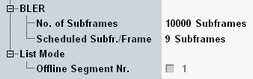

This section describes the following "Measurement Control" settings.

Defines the number of subframes to be evaluated per measurement cycle (statistics cycle). This value includes all downlink subframes (scheduled and unscheduled). The BLER measurement is a single-shot measurement.
All subframes of the configured subframe range contribute to the measurement, see "Measurement Subframe".
Remote command:Number of scheduled subframes per radio frame. Configure this parameter according to the properties of the generated downlink signal. A wrong value can result in wrong measurement results (BLER, DTX, relative ACK, relative NACK, number of processed scheduled subframes).
Remote command:Selects the list mode segment to be displayed in the measurement diagram. To select a segment number, the list mode must be enabled.
Option R&S CMW-KM012 is required.
Remote command: